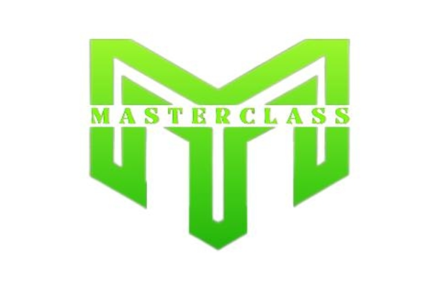
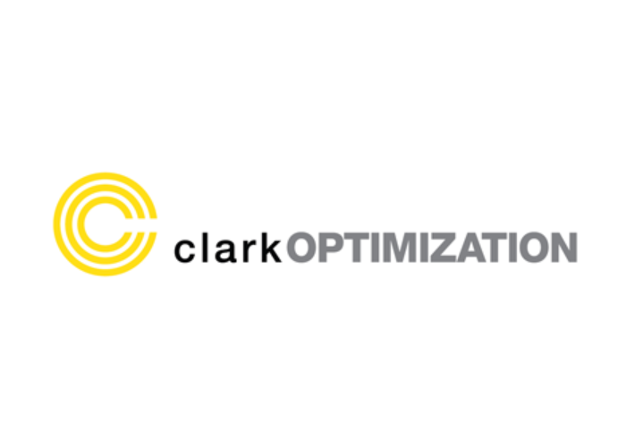

Portfolio
Showcasing Excellence in SEO and Full Stack Web Development
A SEO Specialist and Full Stack Web Developer based in the Philippines.
Here, you will find a curated selection of my projects that demonstrate my proficiency in optimizing online visibility and developing robust web solutions.
My work emphasizes the powerful synergy between SEO and web development, ensuring that each project delivers exceptional value and measurable results.
SEO Mastery
My expertise in SEO is reflected in the success stories of businesses I've helped to grow.
Below are highlights from my projects that showcase the breadth and depth of my SEO skills:
Google Business Profile Optimization
At ETRAFFIC, I led a team that optimized GBP listings for over 40 businesses, achieving top 5 positions for their main keywords in local search rankings. This resulted in a 50% increase in customer engagement and visibility.
Comprehensive SEO Strategy Implementation
For Clark Optimization, I conducted in-depth keyword and competitor research, optimized metadata, and developed new product landing pages. These efforts led to a 60% increase in organic traffic and a 45% improvement in search rankings.
Advanced SEO Techniques
At Online Marketing Gurus, I expedited the SEO department's onboarding process, improving strategy processes by 50%. I also mentored off-shore SEO personnel, which resulted in a 50% increase in the deliverability of SEO action plans.
Full Stack Web Development Expertise
In addition to my SEO capabilities, I bring comprehensive full stack web development skills to the table. This combination ensures that websites I develop are not only optimized for search engines but also provide an outstanding user experience.
Here are some examples of my work:
Dynamic Web Solutions
At various stages in my career, I have developed and maintained web applications using front-end technologies like HTML, CSS, JavaScript, React, and Angular, as well as back-end technologies including Node.js, Python, PHP, and Ruby on Rails.
Robust and Scalable Applications
My proficiency in database management with MySQL, MongoDB, and PostgreSQL ensures efficient and secure data handling, crucial for the performance and reliability of the web applications I build.
Enhanced User Experience
Through meticulous front-end development, I create responsive and visually appealing interfaces that enhance user engagement and satisfaction.
Project Timeline
| Campaign | Description | Month | Deliverables |
|---|---|---|---|
| Discovery | Understand client needs, goals, and current website performance. | Month 1 (Weeks 1-2) |
- Initial consultation - Project requirements document - Preliminary site audit report |
| Research | Conduct detailed keyword research, competitor analysis, and technical site audit. | Month 1 (Weeks 3-4) |
- Keyword research report - Competitor analysis report - Technical site audit report |
| Strategy | Develop a comprehensive SEO and web development strategy. | Month 2 (Weeks 1-2) |
- SEO strategy document - Web development plan - Content strategy outline |
| On-page SEO | Optimize website content, meta tags, headings, and internal links. | Month 2 (Weeks 3-4) |
- Optimized meta tags and headings - Updated content - Improved internal linking structure |
| Technical SEO | Implement technical SEO improvements, including site speed optimization and mobile optimization. | Month 3 (Weeks 1-2) |
- Enhanced site speed - Mobile-friendly site - Structured data implementation |
| Web Development | Develop and integrate front-end and back-end functionalities. | Months 3-4 (Weeks 3-8) |
- Responsive front-end interfaces - Secure and scalable back-end - Database integration |
| Content Creation | Create and optimize content based on keyword research and SEO strategy. | Month 5 (Weeks 1-2) |
- High-quality blog posts - Product/service page content - SEO-optimized images and videos |
| Off-page SEO | Execute link-building strategies and manage social media outreach. | Ongoing (start in Month 3) |
- Quality backlinks - Social media engagement - Influencer outreach |
| Testing & QA | Conduct thorough testing of web functionalities and ensure SEO best practices are implemented. | Month 5 (Weeks 3-4) |
- Functional testing report - SEO audit checklist |
| Launch | Launch the optimized website and monitor initial performance. | Month 6 (Week 1) |
- Live website - Initial performance report - Bug fixes and adjustments |
| Monitoring & Reporting | Continuously monitor site performance, analyze data, and provide regular reports. | Ongoing | - Monthly performance reports - Analytics and insights - Ongoing optimization recommendations |
| Maintenance & Support | Provide ongoing support and maintenance to ensure optimal site performance. | Ongoing | - Regular site maintenance - Technical support - Periodic updates and improvements |
Projects That Speak for Themselves
ETRAFFIC
Successful productization of a stand-alone service for Google Business Profile optimizations, leading to significant improvements in local search rankings.
The Masterclass Group
Managed and optimized Facebook advertising campaigns, generating substantial leads and enhancing customer experience through improved business automation systems.
Clark Optimization
Implemented comprehensive SEO strategies, resulting in improved site rankings and user engagement.
Online Marketing Gurus
Streamlined SEO processes and improved team efficiency, contributing to a higher rate of successful project deliverables.
Online Business Booster
Achieved top 5 Google rankings for 95% of clients, significantly boosting their online visibility and sales.
|  |  |
Why Choose Me?
Proven Results
Demonstrated success in improving search engine rankings and developing high-performance websites.
Integrated Approach
Combining SEO and full stack web development to maximize your digital presence and investment value.
Client-Centric
Dedicated to understanding and achieving your specific business goals with a tailored and strategic approach.
Philippines-Based Professional
Offering top-tier services with competitive rates and excellent communication for seamless collaboration.
Let’s Collaborate
Explore my portfolio to see how my expertise in SEO and full stack web development can transform your digital presence. I am committed to delivering exceptional value and results for your business.
Contact Me today to discuss how we can achieve your project goals.